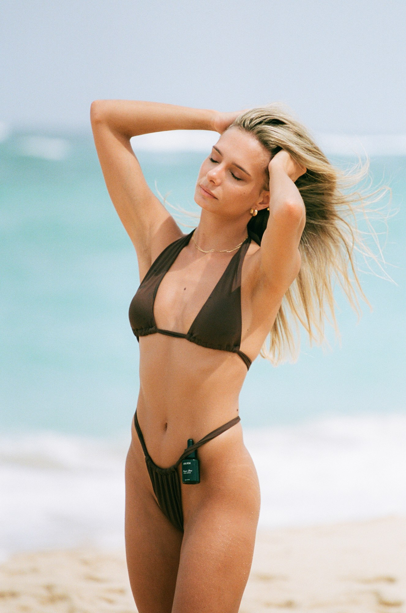
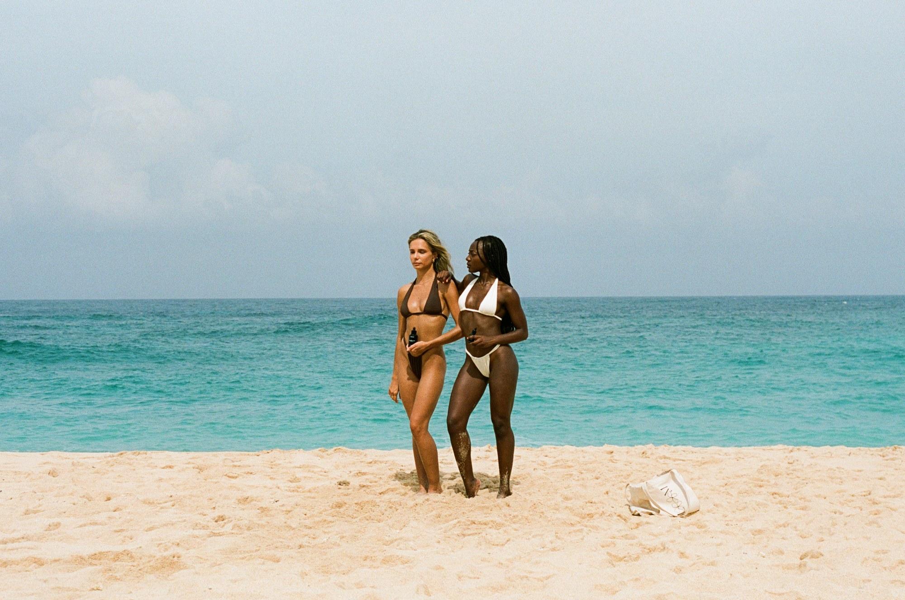
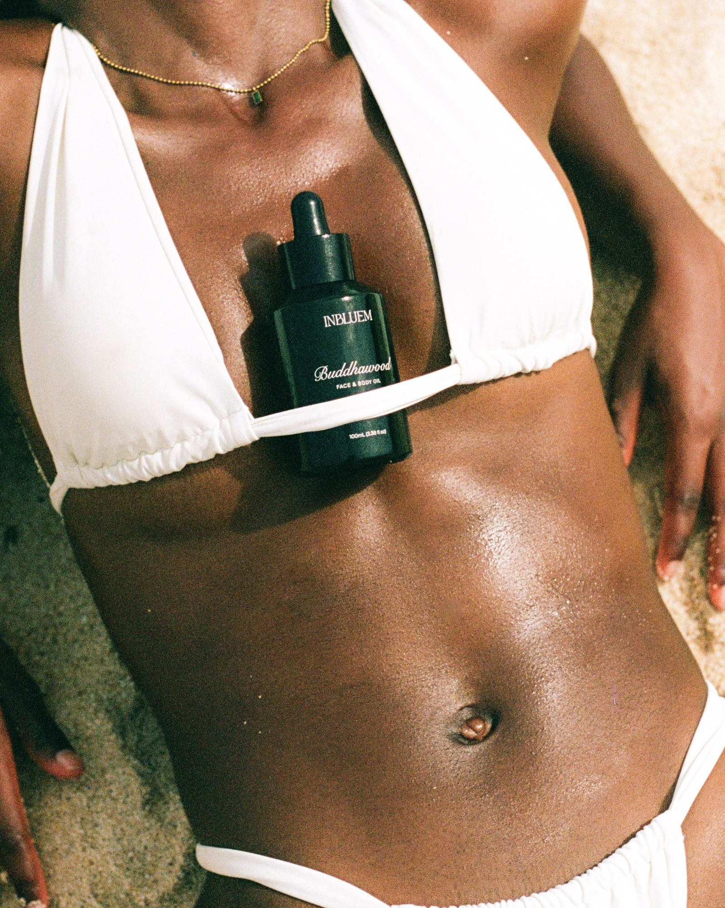
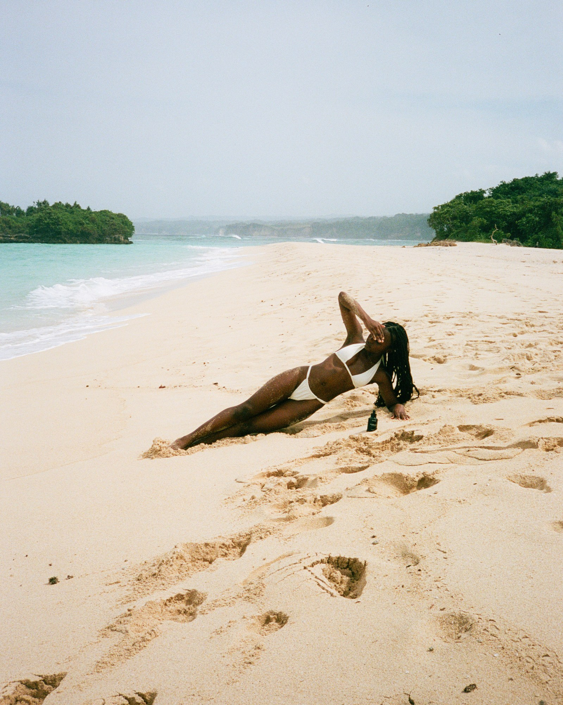
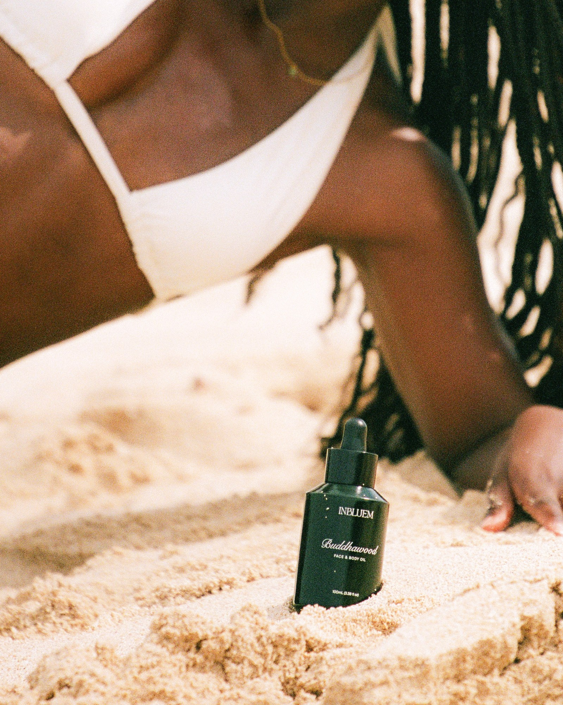
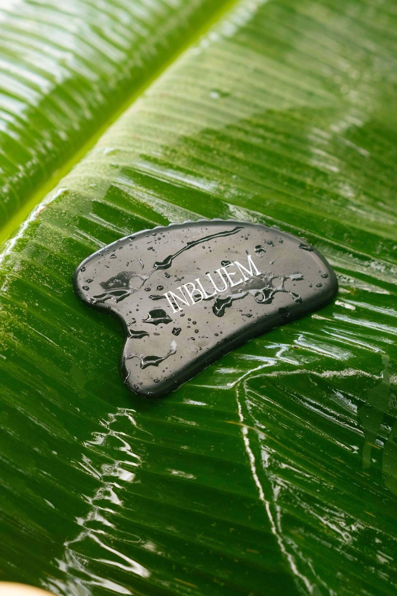
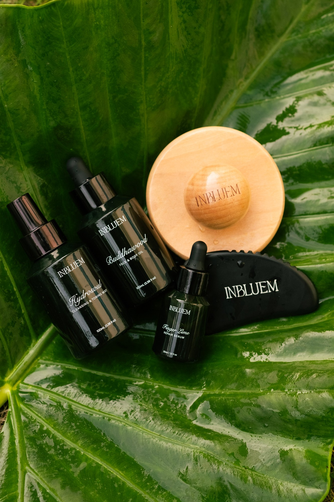
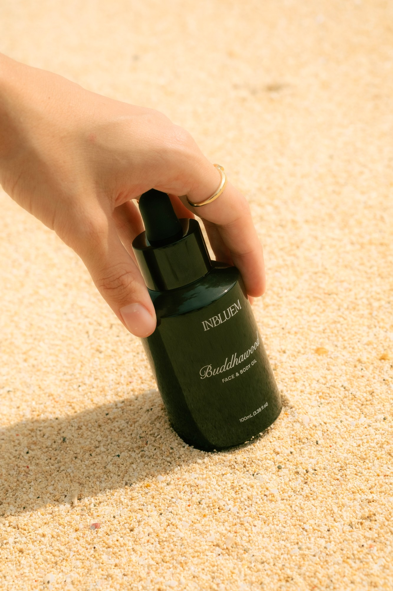
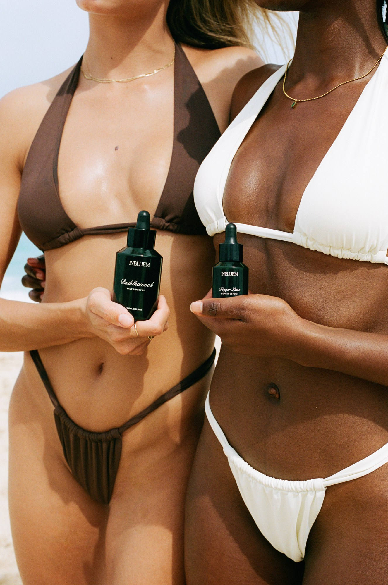
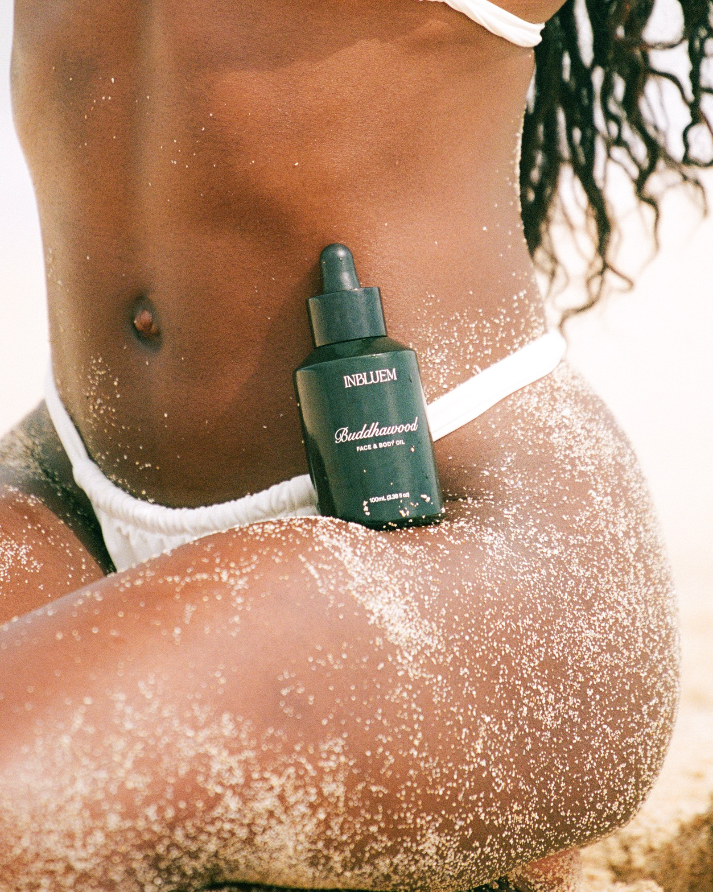

Inbluem
Deséjo conceptualised and shot this campaign for Inbluem's core collection.
Travelling to the island of Sumba, this campaign explores renewal in travel and finding ritual wherever you are.









